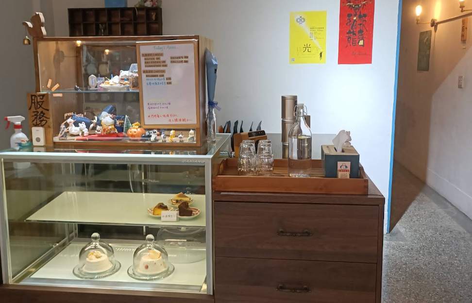
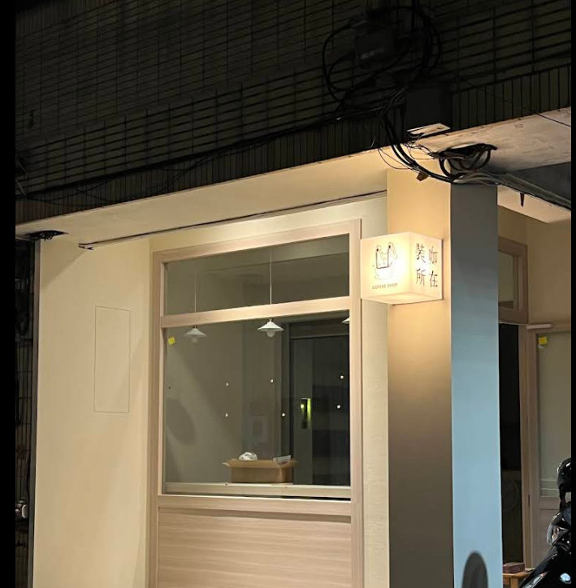
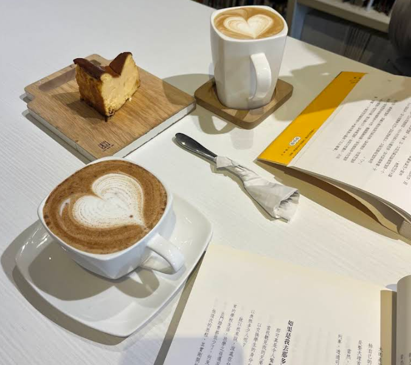
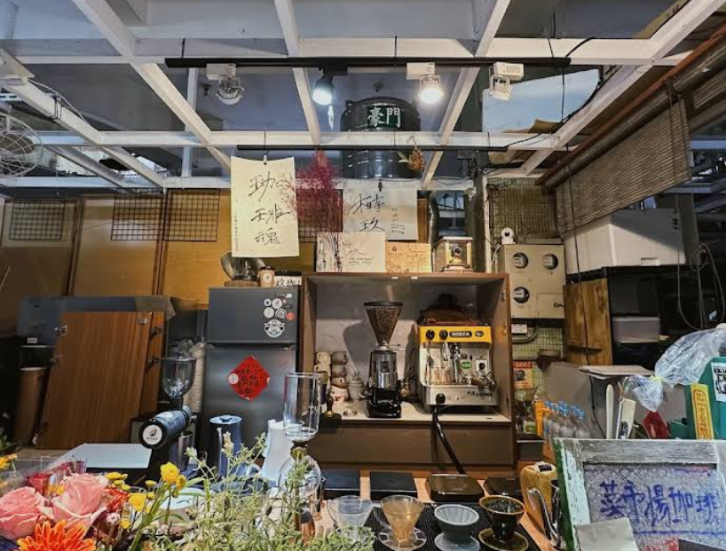

歡迎來到「寶山咖啡地圖」！這裡蒐集了寶山校區附近學生最愛、適合唸書、聊天、放鬆的咖啡廳。不論你是要寫作業還是放空，我們都幫你找好地方了！

一天一天 ONE DAY ONE DAY
貓咪超級可愛 戚風蛋糕很好吃！
店裡面有三隻貓咪喔，裡面的裝潢也超級好拍照 ☆ 很有讀書氣氛。

裝咖所在
輕鬆舒服空間，布丁和提拉米蘇都很不錯！
獨自渡過悠閒的下午或和朋友聚會都很適合 ☆

White Cube Cafe
文創小物、閱讀空間、純白裝潢
一樓有販賣文創小物，二樓有書櫃可自取在店內閱讀 ☆
純白色的裝潢，讓人可以很放鬆悠閒的喝咖啡！

榯玖珈琲所
溫馨小空間，手沖咖啡很好喝！
空間雖然比較小，老闆很喜歡跟客人聊天，但讓人感覺很自在 ☆

小客廳咖啡館
慵懶氣氛像在家裡客廳一樣
小小的空間
就在八卦山大佛門口對面，適合和好朋友一起來吃早午餐喝咖啡！☆